0. 課程資訊與教材
| 課程名稱 | EP11「Claude Skills NotebookLM-一起來串Notebooklm吧」，簡報開場副標為 「Gemini vs. Claude：NotebookLM 知識庫的兩種極致玩法」 |
|---|---|
| 頻道 | 生成式 AI 應用電台・晨學講堂 |
| 直播時間 | 2026/01/04（日）06:30 AM 起（畫面右上角直播計時器顯示 ON AIR 06:30） |
| 教材 | 本集 Google Drive 資料夾僅有錄影檔（約 776MB，1 小時 9 分 35 秒），沒有另外提供簡報 pptx 或課堂筆記 md。畫面中可看到講師本人的簡報檔（共 31 頁，檔名「簡報_EP11_Claude Skills NotebookLM-一起來串Notebooklm吧.pptx」）存放在她自己的雲端硬碟，並未一併分享到本集資料夾。 |
| 一句話先懂 | NotebookLM 是「零幻覺接地」的知識庫，但它自己輸出能力有限；這集教你把同一份知識庫分別「串」給 Gemini（原生按鈕、零門檻）與 Claude（沒有原生按鈕，要匯出上傳或裝開源 Skill），依需求選最適合的工作流程。 |
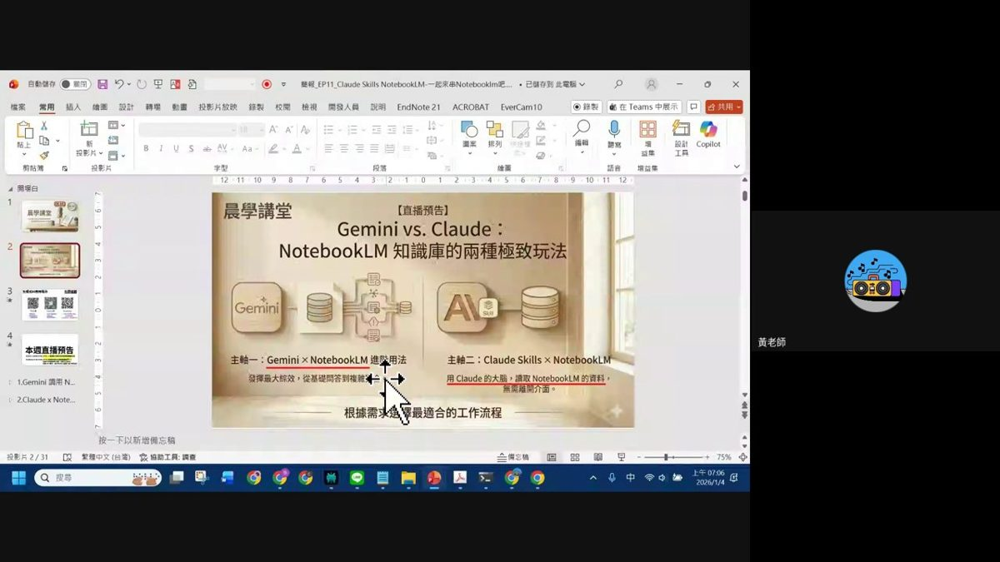
1. 為什麼要「串」NotebookLM：一顆知識庫，兩種大腦
先搞懂 NotebookLM 在這套工作流程裡扮演什麼角色，以及兩條串接路線的差異。
NotebookLM 的定位：AI 知識庫，主打「零幻覺接地」
- 收集錄音／文件：把你上傳的來源（PDF、逐字稿、簡報、網頁、YouTube 連結等）整理成單一知識庫。
- 整理雜亂資訊：把散落各處的素材彙整成可查詢的結構。
- 零幻覺接地：回答只根據你匯入的來源，不會像一般對話模型憑空生成，這正是它最大的價值。
兩條路線一次看
| 路線 | 怎麼串 | 門檻 |
|---|---|---|
| 主軸一：Gemini x NotebookLM | Gemini 對話框「+」號原生內建 NotebookLM 選項，點兩下就連上，不用離開介面。 | 低，網頁點一點就會 |
| 主軸二：Claude Skills x NotebookLM | Claude 沒有現成的 NotebookLM 按鈕，要靠①手動匯出來源再上傳，或②裝一個開源 Claude Skill 讓本機 Claude Code 用瀏覽器自動化直接查詢 NotebookLM。 | 中～高，需要額外安裝與設定 |
2. Gemini x NotebookLM（上）：前置設定與提示心法
06:20Gemini 這邊真的只要點兩下。
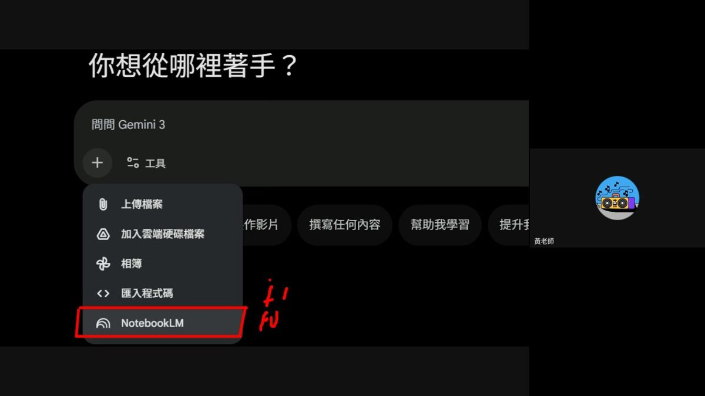
前置設定三步驟（簡報原文）
- 進入 Gemini 對話頁面，點擊左下方的「+」號，選擇「NotebookLM」。
Note：免費和付費用戶皆可使用。 - 選擇要討論的主題筆記本，確認後即可開始對話。
實際操作畫面示範一次可勾選多本筆記本（畫面中同時選了 11 本）一起接進同一場對話。 - Result：Gemini 直接調用知識庫進行回答。
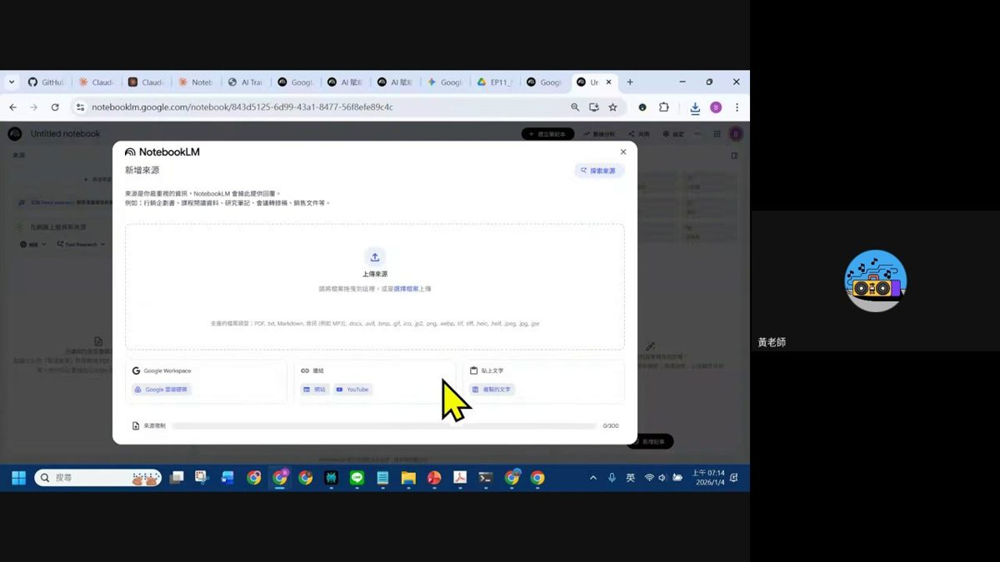
進了知識庫之後，兩條提示心法
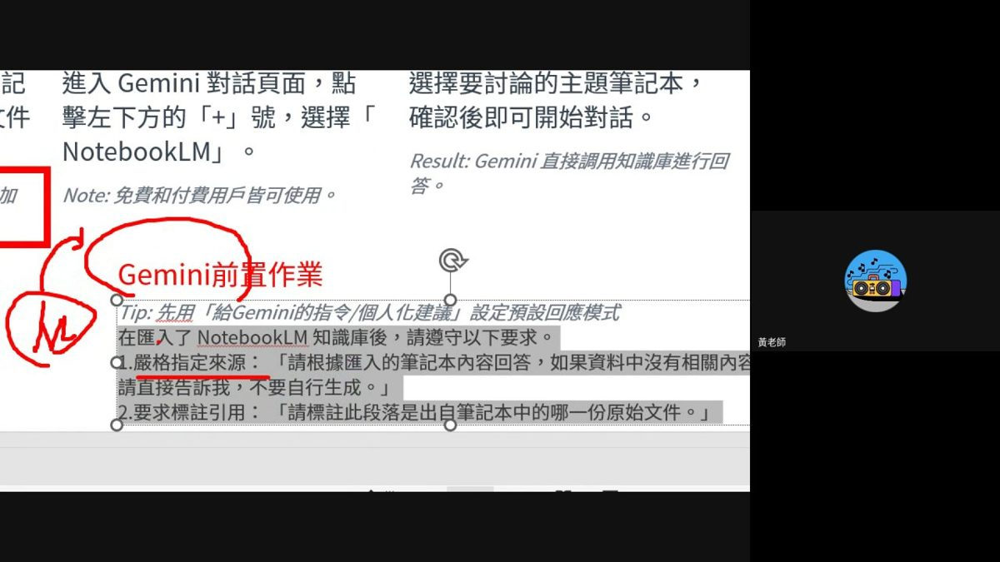
不只預設對話，自訂 Gem 也能用
示範中切到一個自訂 Gem「N次方專講小書僮」，同樣在輸入框按「+」叫出工具選單，一樣看得到 NotebookLM 選項——代表這個連接能力不限於預設 Gemini 對話，任何自訂 Gem 都能掛上你的知識庫，變成一個「有記憶、有專屬資料庫」的客製化助理。
3. Gemini x NotebookLM（下）：把知識庫變成雙主持人 Podcast
40:00基礎問答學會了，接下來是這條路線真正的「進階玩法」——直接請 Gemini 把知識庫內容改寫成一份可以拿去配音的雙人 Podcast 逐字稿。
第一步：下指令生成中英夾雜雙主持人腳本
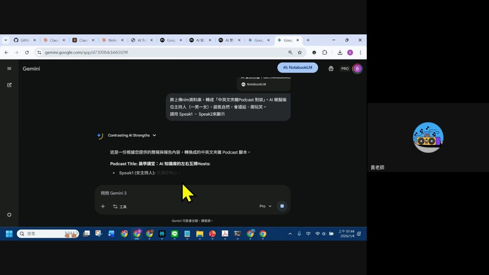
第二步：用「請記憶」把格式存下來
把 Speak1／Speak2 的人設固定下來後（如 Speak1＝男，熱情好奇；Speak2＝女，冷靜專業），對 Gemini 說「請記憶」，Gemini 會把核心資料內容與指定輸出格式存進當前對話記憶中，之後同一個 Gem／對話串裡不用每次重講規格，直接沿用。
第三步：拿到 Google AI Studio 生成真人雙語音
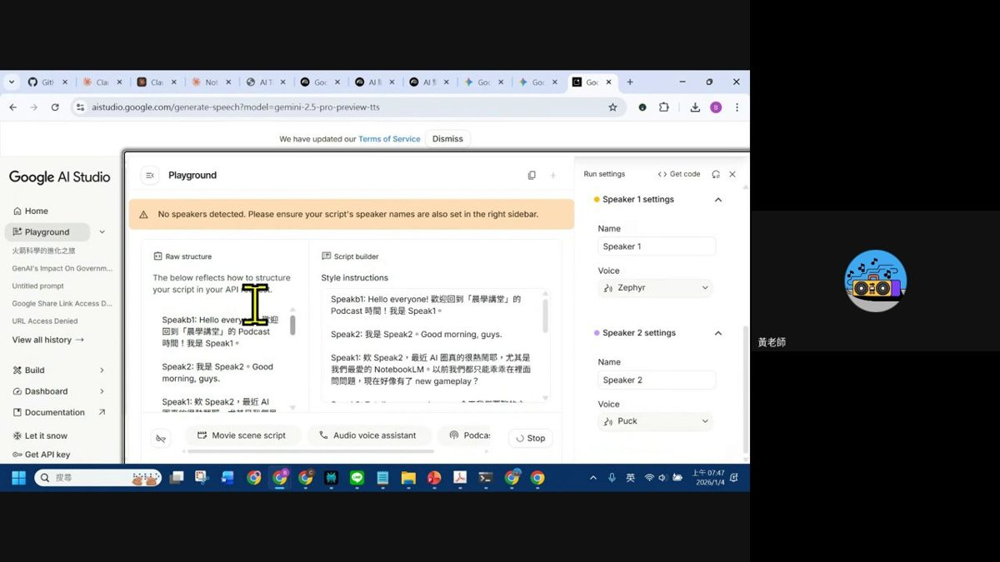
生成的音檔（畫面中檔名「下載.wav」，3.4MB）可以直接上傳回 Google Drive 的專屬資料夾保存、分享。
整條路線的總結圖
| 環節 | 角色 | 負責什麼 |
|---|---|---|
| NotebookLM | AI 知識庫 | 收集錄音／文件、整理雜亂資訊、零幻覺接地 |
| Gemini 3 Pro | AI 輸出引擎 | 深度推理分析、創意內容生成、跨資料庫整合 |
| Canvas | 展示平台 | 動態網站製作、視覺化呈現、專業報告輸出 |
4. Claude Skills x NotebookLM（上）：技能回顧＋安裝 Claude Code
49:00切到第二條主軸前，先花一點時間複習 Claude Skills 是什麼、再帶大家把 Claude Code CLI 裝起來（這是後面「開源 Skill 瀏覽器自動化」路線的必要前提）。
Claude Skills 快速回顧（引用 EP7 教材）
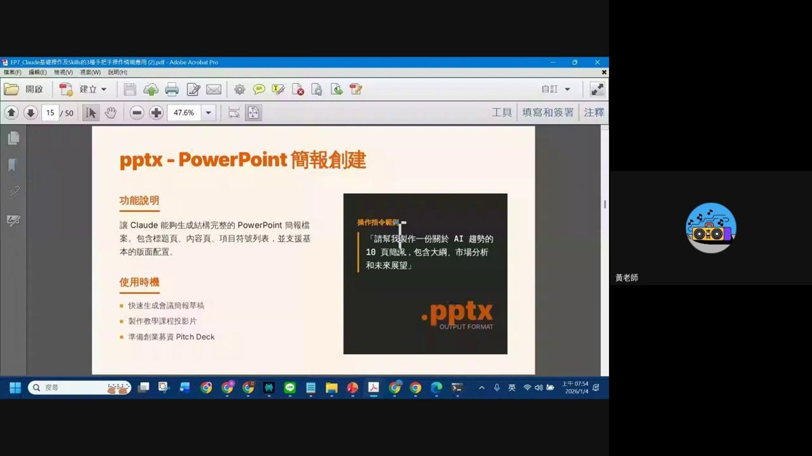
安裝 Claude Code CLI（Windows）
要用「本機 Claude Code＋開源 Skill」串 NotebookLM，第一步得先把 Claude Code 裝到自己電腦上。官方文件在 code.claude.com/docs/en/overview，Windows PowerShell 的安裝指令是：
課堂真實除錯：一個典型的安裝錯誤
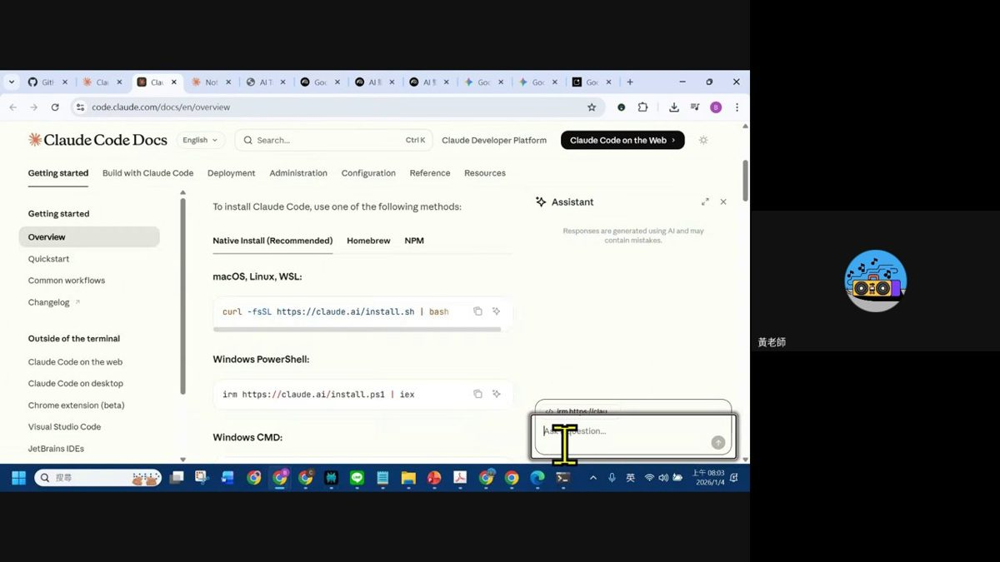
irm https://claude.ai/install.psl | iex 後出現「'irm' 不是內部或外部命令、可執行的程式或批次檔」。這裡踩了兩個常見坑：①檔名打成了 install.psl，正確應該是 install.ps1；②更關鍵的是 irm 是 PowerShell 專屬指令，在 Windows 傳統的「命令提示字元 cmd」裡本來就不認得，一定要開「Windows PowerShell」視窗才能執行，不能用 cmd。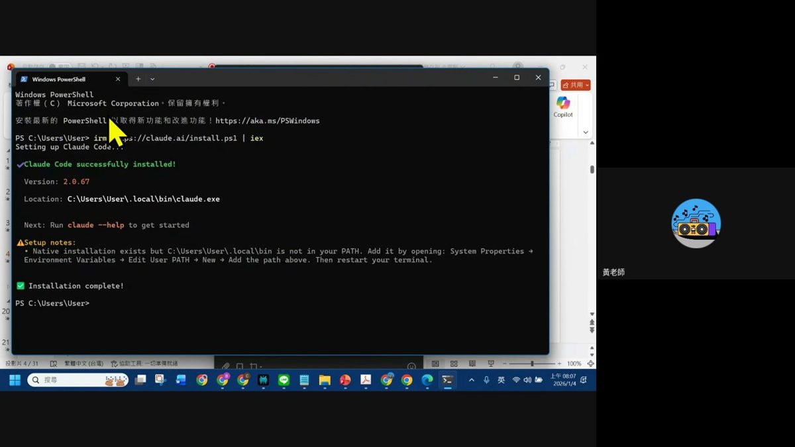
C:\Users\User\.local\bin\claude.exe。若系統提示「Native installation exists but …\.local\bin is not in your PATH」，需手動到「系統內容 → 環境變數 → 使用者變數 → Path → 新增」把該路徑加進去，再重開終端機。- 確認要開的是 Windows PowerShell，不是命令提示字元（cmd）。
- 貼上
irm https://claude.ai/install.ps1 | iex並執行。 - 看到 Installation complete! 即代表安裝成功。
- PATH 沒抓到的話，手動加環境變數後重啟終端機再試。
- 打開新終端機輸入
claude，看到歡迎畫面（Claude Code v2.0.76／Welcome back）就代表可以開始用了。
5. Claude Skills x NotebookLM（下）：讓 Claude 讀懂 NotebookLM 的兩條路
Claude 沒有像 Gemini 那樣的原生「+」按鈕能直接連 NotebookLM，這集示範了兩種替代方案，一種輕量手動、一種進階自動化。
路線 A（輕量）：Chrome 擴充功能匯出，再上傳給 Claude
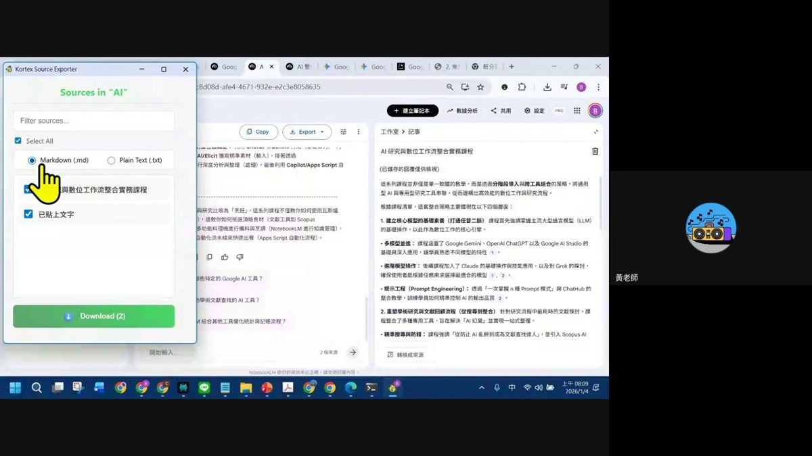
- 在 NotebookLM 筆記本內，開啟 Kortex Source Exporter 擴充功能。
- 勾選要匯出的來源（可全選）。
- 選擇匯出格式：Markdown 或純文字。
- 按 Download，取得整批來源的 zip 檔（畫面中檔名
NotebookLM_Sources.zip）。 - 到 claude.ai 網頁版聊天視窗，直接把這個 zip 附加上傳，交給 Claude（示範用 Sonnet 4.5）分析、改寫、產出內容。
路線 B（進階）：開源 Claude Skill，讓 Claude Code 直接「問」NotebookLM
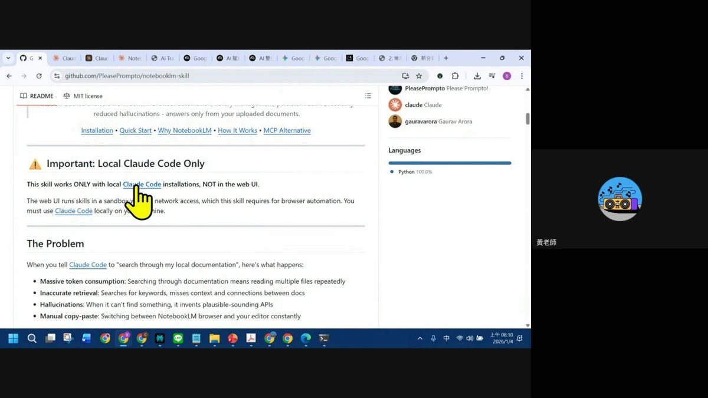
它解決的問題（README「The Problem」）
當你叫 Claude Code「搜尋我的本地文件」，實際上會發生：
- 大量消耗 token：搜尋文件代表要重複讀取多個檔案。
- 檢索不準確：靠關鍵字搜尋，容易漏掉上下文與文件之間的關聯。
- 產生幻覺：找不到答案時，會自己編出看似合理但其實不存在的內容。
- 手動複製貼上：得不斷在 NotebookLM 瀏覽器分頁跟編輯器之間切換搬資料。
這個 Skill 的解法：讓 Claude Code 直接向 NotebookLM 本身提問（NotebookLM 自己就是一個很強的「零幻覺」知識庫問答引擎），取代 Claude 自己在一堆本地檔案裡土法煉鋼地搜尋，同時兼顧降低幻覺與省 token兩個目標。
6. 怎麼選：兩條路線比較與重點整理
| Gemini x NotebookLM | Claude Skills x NotebookLM | |
|---|---|---|
| 串接方式 | 原生「+」按鈕直接連筆記本，無需離開介面 | ①手動匯出上傳（輕量）或②開源 Skill＋本機 Claude Code 瀏覽器自動化（進階） |
| 即時性 | 即時讀取，筆記本更新馬上反映在對話中 | 匯出法非即時，需重新匯出；開源 Skill 法可即時查詢 |
| 強項 | 多模態輸出（雙主持人 Podcast 逐字稿）＋銜接 AI Studio TTS、Canvas 一條龍生態圈 | Claude 的推理與長文寫作／程式能力，搭配內建 Skills 直接產出 pptx／docx 等結構化檔案 |
| 使用門檻 | 低，網頁點兩下就能用，免費帳號也支援 | 中～高，進階玩法要會裝 Claude Code CLI、Chrome 擴充功能或 GitHub 開源 Skill |
| 適合情境 | 已經活在 Google 生態圈、想快速把知識庫變成多媒體內容（Podcast、簡報、網站） | 需要 Claude 的寫作／程式／複雜 Skills 能力，來處理 NotebookLM 已經整理好的知識 |
本集重點整理
- NotebookLM 的核心價值是零幻覺接地：回答只根據你匯入的來源。
- Gemini 串 NotebookLM：對話框「+」號 → 選 NotebookLM → 勾選筆記本（可多本）→ 直接對話；記得用「嚴格指定來源」與「要求標註引用」兩句心法降低亂編風險。
- 進階玩法：請 Gemini 用 Speak1／Speak2 格式把知識庫改寫成雙主持人 Podcast 逐字稿，再丟進 Google AI Studio 的 Generate Speech 配上兩種語音，做出真的雙人對話音檔。
- Claude 沒有原生按鈕，要嘛用 Kortex Source Exporter 擴充功能匯出 zip 手動上傳，要嘛裝開源 Skill notebooklm-skill 讓本機 Claude Code 用瀏覽器自動化直接查詢——後者才是真正做到「零幻覺、省 token、不用複製貼上」。
- 安裝 Claude Code CLI 一定要用 Windows PowerShell（不是 cmd），指令是
irm https://claude.ai/install.ps1 | iex。
7. 資料來源與製作說明
- 誠實聲明：本集 Google Drive 資料夾僅有一支錄影檔（約 776MB，1 小時 9 分 35 秒），沒有簡報 pptx，也沒有課堂筆記 md。因此錄影本身就是本頁唯一的教學內容來源。
- 製作方式：下載完整錄影 → 用 PyAV 抽出音軌轉 16kHz 單聲道 wav → 以 faster-whisper（small 模型，language='zh'）跑出完整逐字稿並通篇讀過 → 每 20 秒抽 1 幀（約 209 張），逐幀親眼判讀畫面上實際操作的每一個步驟、每一句簡報文字與每一次真實的課堂互動（含學員在 LINE 群組回報的安裝錯誤與老師的排錯過程）→ 依實際內容整理成本頁章節，並將代表性畫面縮圖存為
ep11-img/frameNN.jpg嵌入對應段落。 - 非推測聲明：本頁所有操作步驟、指令、投影片文字與 GitHub 專案資訊，均為畫面實際出現內容或逐字稿實際講述內容的整理，沒有任何憑印象或推測補寫的段落。畫面時間標記（mm:ss）對應抽幀當下的實際錄影秒數。
- 畫面中出現但本頁未深入延伸的資訊：簡報末頁預告了本週另外兩集直播——EP12（Zotero 文獻管理關鍵用法）與 EP13（NotebookLM 開源替代品 Open Notebook 實測），有興趣可留意後續集數筆記。
- 介面參考：互動技能地圖頁沿用本站既有集數的卡片式多層導覽與遊戲化進度設計。